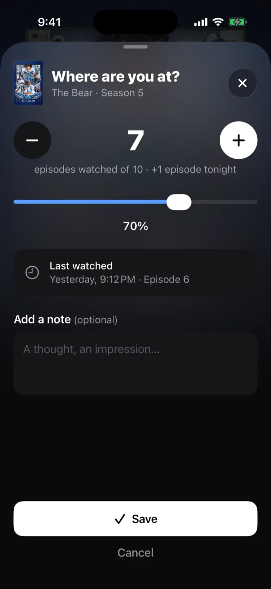
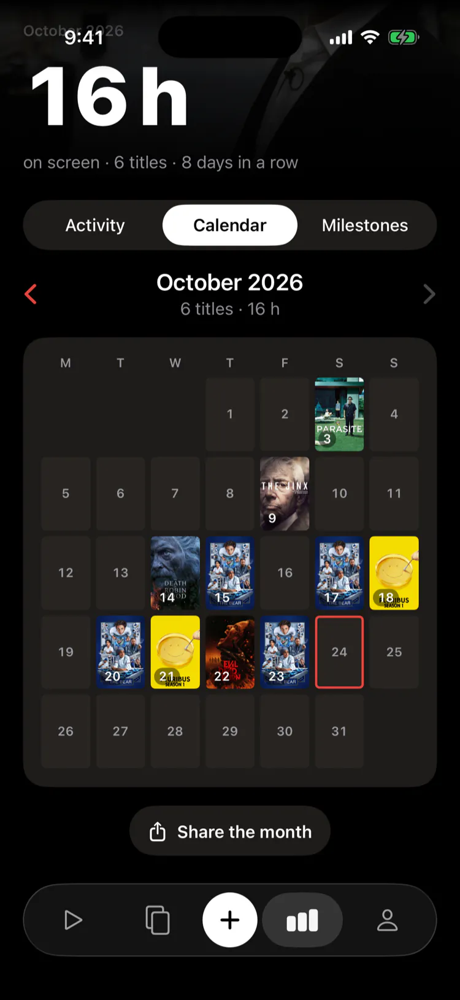

A TV show tracker that remembers where you left off
Last updated: November 21, 2026
Porcom is a free TV show tracker for iPhone: log each episode in a tap, follow every season on its own, and see your hours on screen. No account, no ads, no subscription.

One tap after each episode
Tap Continue when the credits roll, or pick the episode you’re on. Every update is saved as a viewing session, with its date.
Tonight’s series, front and centre
The home screen opens on what you’re watching tonight, with your progress. Nothing under way? Porcom suggests an idea for tonight.

Every season gets its own page
Porcom follows series one season at a time: each season has its own poster, trailer, dates and verdict, and the seasons of a series are stacked together on their own page.

A calendar of every episode
Each viewing session lands in your calendar, day by day, so you can see when you binged a whole season.

Hours on screen and streaks
Your hours on screen by week, month or year, by platform and by genre, a yearly goal, and a streak that forgives one missed day a week.

Free and private
Porcom works without an account. Your journal stays on your iPhone and in your private iCloud, which we can’t access.
Download Porcom on the App Store: free, with no account, no ads and no subscription.
Questions
See the frequently asked questions or visit Support.